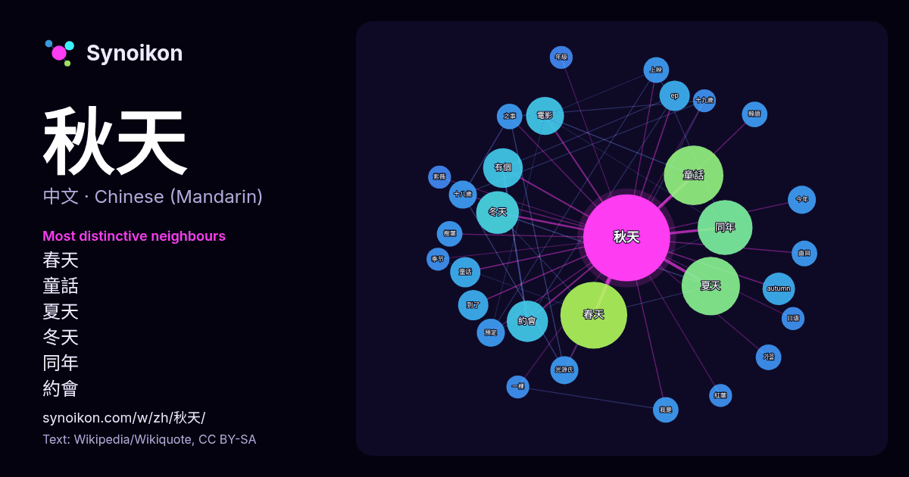

中文 · 每日一词列表
秋天
“autumn” · 来自维基百科, Wikiquote 604 次出现中其周围的词。

最具特色的邻近词
- 春天 33×
- 童話 27×
- 夏天 25×
- 冬天 14×
- 同年 14×
- 約會 14×
- 有個 13×
- autumn 9.0×
- 童话 8.0×
- ep 7.8×
- 光源氏 7.0×
- 十八歲 6.9×
- 今年 6.6×
- 預定 6.6×
- 電影 6.5×
- 가을 6.0×
- 樹葉 5.9×
- 韓語 5.9×
- 我是 5.7×
- 之事 5.6×
× = 比维基百科普通文本中多出的倍数。
最常见的邻近词
- 春天 34
- 童話 27
- 夏天 26
- 同年 23
- 冬天 14
- 一個 13
- 約會 13
- 有個 12
- 電影 11
- 香港 11
- autumn 8
- 開始 8
- ep 7
- 到了 7
- 童话 7
- 中國 6
- 今年 6
- 他的 6
- 光源氏 6
- 十八歲 6
上下文
- 《秋天的童话》（英語：An Autumn's Tale，马来西亚、新加坡、台湾译《流氓大亨》）是德寶電影公司出品、1987年上映的一部著名的香港愛情電影，講述一位初到他國留學的女子，在失戀期間與一位唐人街草根男子之間的故事。此片由張婉婷執導，羅啟銳編劇，周潤發、鍾楚紅、陳百強等主演，为张婉婷「移民三 Wikipedia snippets · 秋天的童話
- 獨裁者的秋天或族长的秋天（西班牙语：El otoño del patriarca，英譯The Autumn of the Patriarch）是加布里埃尔·加西亚·马尔克斯于1975年创作的小说。 馬奎斯自敘《獨裁者的秋天》為“权力的孤独之诗”。小说劇情隨著一名虛構獨裁者的日常生活推進，該獨裁者形 Wikipedia snippets · 獨裁者的秋天
- 開往秋天的列車 （韓語：가을로 가는 기차，官方簡稱：가기차，英語：A train to autumn）是韓國Cube娛樂旗下，以真誠音樂和感性聲音來取勝的四人抒情女團，成員包括智鉉、秀彬、阿煐、炤美。2018年11月5日，發行出道曲《你在的季節》。2018年11月9日，於音樂銀行表演出道舞台。 2019年年末，團體已解散 … Wikipedia snippets · 開往秋天的列車
- 《少年维特的烦恼》（德語：Die Leiden des jungen Werthers）是第一部让歌德在德国几乎一夜成名的小说。本书于1774年秋天在莱比锡书籍展览会上面世，并在那里成了畅销书。它是歌德作品中被他的同时代人阅读得最多的一本。《少年维特的烦恼》中的主人公——他的行为仅仅取决于他的感觉——是感伤主义的代表性人物。 Wikipedia snippets · 少年维特的烦恼
- 自修，毛泽东决定报考不收学费的师范学校，最终成为湖南省立第四师范学校的预科学生。1914年，由于学校被湖南省立第一师范学校合并，他重读半年预科，才在秋天进入本科第八班学习。在一师就读期间，其深受杨昌济、徐特立、黎锦熙等教员的影响。 1915年，毛泽东首次参与社团活动，加入杨昌济的芋园哲学研究小组，探 Wikipedia snippets · 毛泽东
- 導農民進行土地革命，打倒地主分田地；他還將自家的田地和牲畜分發給農民和賣掉，費用獻給黨組織，引起父親趙廷賓不悅，但是他還是成功說服父親。 1932年秋天，趙父送趙到縣立第一小學讀書。1933年夏天，趙成功考取開封的省立初級中學（今開封高中），中學時期，他成績優異，多次獲得校方頒發的獎學金。1935年 Wikipedia snippets · 赵紫阳
- 在唐朝後期出現兩稅法。德宗時期，宰相楊炎制定兩稅法，並且廢除其餘名目的租稅。兩稅法即政府以當地現有的男丁與田地數為依據，劃分等級，規定分兩次於夏天、秋天納稅。而商人是以貨物總值的三十分之一，於所在的州縣納稅。其稅額，原本用錢為單位，到穆宗時以布代替。這樣，官僚、貴族、地主和商人都要合理納稅，減輕平民 Wikipedia snippets · 唐朝
- 主义，以及英国的古典政治经济学。连同他早期对黑格尔辩证法的研究，马克思在巴黎这段时间的治学标志着「马克思主义」思想体系的所有重要组成部分在1844年秋天都已基本成形。尽管如此，马克思始终难以专注于对政治经济学的系统批判，这不仅是来自日常生活的压力使然，还因为他当时主编激进派报刊，在此后革命风潮高涨的 Wikipedia snippets · 卡尔·马克思
更多词
于 2026-10-09 以默认设置预先计算（±5 个词，中等语料）。交互式图可用实时数据刷新。
界面为机器翻译，欢迎指正。